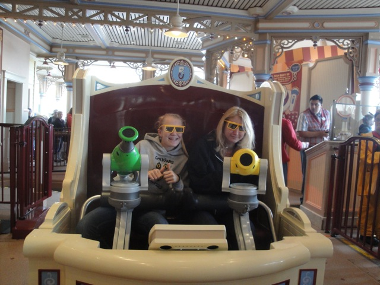
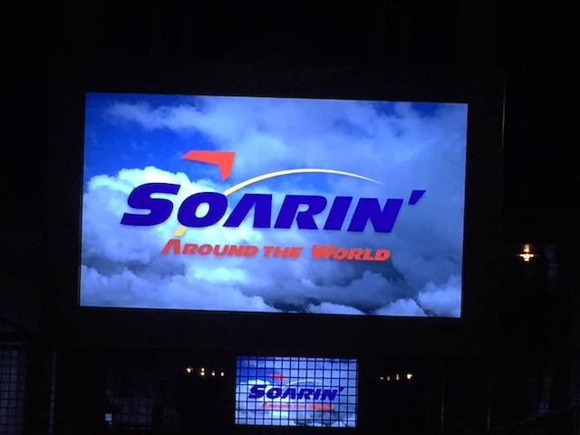
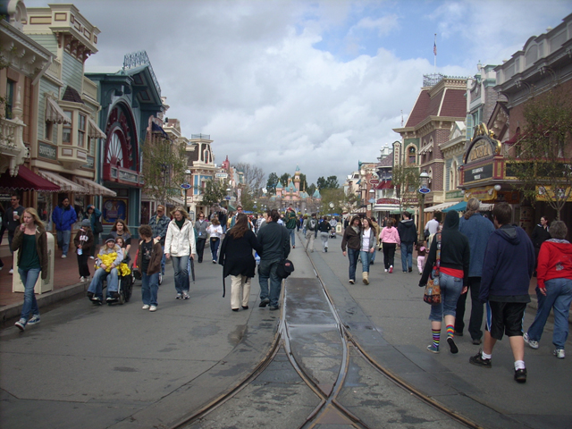

Even if you are not a roller coaster enthusiast and are just going through these park reviews, not knowing the majority of these theme parks, you know about Disneyland. I don't care if you live off the grid in a cave in the middle of nowhere Siberia. You know about Disneyland. And though I wouldn't call the Disneyland Resort the greatest theme park of all time, I still enjoy visiting Disneyland and California Adventure today. And although the Walt Disney World Resort is better, That doesn't decline Disneyland's quality. I still enjoy both parks. I will admit that Disneyland is cramped, but I still enjoy this park alot. All the Mountains are fun, even if some of their Floridan Counterparts are better. And Indiana Jones beats the living sh*t out of Dinosaur. And as for Disneys California Adventure, I really feel that this park is underrated. I really enjoyed the old atmosphere and the new makeover makes it even better(mostly, I'm not a fan of Pixar Pier. Paradise Pier was better). It breathes new life into the park with the new entrance, World of Color, Carsland, and now Avengers Campus. Despite all the better things about Walt Disney World and Tokyo Disney Resort, I still really enjoy the Disneyland Resort a lot.
Here are the reviews of all the Flat Rides at the Disneyland Resort. First off, There's Guardians of the Galaxy, but the review is right up there, so we'll move on. Aside from Guardians of the Galaxy, The Disneyland Resort is doing pretty poorly in the Flat Ride department. Disneyland barley has any flats at all! All Disneyland has is Astro Orbiter, Dumbo, and the Mad Hatter Tea Party! And Astro Orbiter and Dumbo are practically the same thing. The Mad Hatter Tea Party are poor teacups due to their lack of spinning. At Disneys California Adventure, while there are more flat rides there than at Disneyland, most of them aren't that great. Aside from Guardians of the Galaxy, the best flat ride at California Adventure is the Mickey Wheel (Formally known as the Sun Wheel). The swinging cars are really cool. If you're riding this with the right group of people, you could be having the time of your life. Click here to see just how fun the Mickey Wheel can be with the right people. The rest of the flat rides loacated at California Adventure include Silly Swings, a set of chairswings that look really nice. Jumping Jellyfish, a kiddy parachute tower. And Golden Zephyer, a cool classic rocket flat ride that I assume will leave soon due to it's hypersensitivity to the wind, and a lot of kiddy flat rides in a Bugs Land, CarsLand, and Pixar Pier.
Here are the reviews of all the Dark Rides at the Disneyland Resort. This is an area where Disneyland is doing a phenomenal job in (Because that's what they're known for). And they do have several outstanding dark rides. We already reviewed one of them up above, Radiator Springs Racer, so lets talk about the other great ones. First up, the Rise of the Resistance. This is a.....VERY unique dark ride. It's really hard to describe this ride, but I guess one way you could describe it would be like a bizarro Frankenstein love-child of Universal's Spiderman and Japanese Pooh. It's a tracked Simulator, much like Spiderman, and usesless the same trackless technology on Japanese Pooh. But also EXTREMELY well themed. The ride also apparently has a drop ride section, which really helps the freefall portion of the simulation. Oh, and the countless preshows before hand really help. Next up, Indiana Jones. On Indiana Jones, you get in a jeep off to find treasure. But then you look into the eyes of Mara and go off course. Then it gets all bumpy and you swerve into a room of skeletons. Then you go into a big room of fire where you cross and old rickety bridge. Then after that, a big snake pops out at you. Then you see skeleton ninjas that shoot air at you. And finally the big finale with the boulder. This is a really awsome dark ride. Then we have the not crazy good, but still pretty good dark rides. Haunted Mansion. The streching room is fun and it's entertaining to fool with the hitchhiking ghosts. Pirates of the Carrebien, another classic Disney Dark Ride, and unlike Haunted Mansion, they can actually make a decent movie from it (I said MOVIE, not MOVIES. Those sequels are AWFUL!!!). Cartoon Spin, Occasionly I'll ride this and when I ride it, I always enjoy my ride. The spinning is fun, and the fact that its based off my favorite Disney Movie ever certainly helps. Toy Story Mania is alot of fun. When you're not having fun spinning around, you're playing some sort of 3D game. It's almost like playing Wii Play in Nerdy Glasses. And I'm personally impressed that they updated it to include characters from Toy Story 3. Soaring is nice and relaxing, plus you get to see the whole world (but don't use Soaring as an excuse to not travel. Go travel). And since its makeover, Star Tours is just an extremely fun simulator. I really like the interaction that the audience now has with someone in the audience *cough*Celeste*cough* being the rebel spy, and just the different programs are a ton of fun. And all the other dark rides are just typical Disney Dark Rides. But lets start reviewing the other dark rides. Mr Toads Wild Ride, It sends you to hell so it's automatically cool. Pinnochio, it has beer, cigars, and jackasses. So thats cool. Jungle Cruise, a fun ride to ride once in a while. Snow White, just a random dark ride. Peter Pan, a random dark ride that makes you "FLY!". Small World, that song gets obnoxious. Buzz Lightyear, at least you get to shoot stuff (Not a big fan of shooting dark rides). Nemo, it's cool that you're actually in a submarine, but it's simply too long. Little Mermaid, lame that there's no real conflict. Ariel and Eric just kiss. No Vanessa, no Giant Ursula, no pressure, just love. How f*cking lame. Pooh, name explains all. Monsters Inc, all I have to say is, "WHY THE F*CK ISN'T ROCK'N'ROLLERCOASTER HERE!!!!?" So that just about covers ALL of the dark rides at the Disneyland Resort. With Radiator Springs Racers, Rise of the Resistance, and Indiana Jones, you can't have a bad dark ride collection.
One of the most complex dark rides in the world, and....it stands really strong! =)
Dude! This ride kicks major ass!!
Haunted Mansion decorated for Christmas/Halloween (Be sure to look out for hitchhiking ghosts).

It's like playing Wii Play if it was sponsered by Toy Story characters while spinning around in an office chair while wearing nerdy glasses.

No. Riding Soaring Around the World does not count as traveling. Go book a flight somewhere.
Water Rides
Here are the reviews of all the Water Rides at the Disneyland Resort. The Disneyland Resort has a really good water ride, though they used to have ANOTHER great one. You know this name. Splash Mountain! Unlike the Florida version, This Splash Mtn had inline seating. And I LOVED Splash Mtn. And I am NOT happy they're retheming it. I stand by the rant/essay about why I dissaprove of the change. I DON'T have high hopes about Tiana's Bayou Journey. Sure, it'll probably be good. But MOST LIKELY NEARLY AS GOOD AS SPLASH MOUNTAIN!!! Now onto the other water ride at the Disneyland Resort still there, Grizzly. After boarding and going up the lifthill, it's alot of fun as you meet with strangers around the world to have fun as you go through rapids, two drops, and possibly even a gyser together. So overall, The Disneyland Resort has a great water ride!
This ride is still avaliable in Tokyo Disneyland! =)
The gyser on Grizzly River Run.
Dining
Here are the reviews of all the resteraunts at the Disneyland Resort. Let's start with the official Incrediblecoasters Resteraunt of the Disneyland Resort, Storytellers Cafe. At Storytellers Cafe, you can order lots of things. And these things arn't your typical amusement park crap! It's ACTUAL REAL FOOD! You can get a hamburger, you can get a Monte Cristo, you can get pizza, you can get spaghetti, and there are many other things on the menu. And Storytellers will FILL YOU UP!!! You will not get full at Storytellers Cafe. Although Storytellers is the resteraunt we mainly visit at the Disneyland Resort, We also visit many other resteraunts here. In Disneyland, you can visit the Blue Bayou. Here are some things on the Blue Bayou. It's very dark in there, you can get offride shots of Pirates of the Carrabein, the food is good, and it's got a really nice atmosphere. But don't expect to eat here. You need reservations WEEKS in advance a lot of the time. It's a miracle that a little rain got us in there at all. Up next, we'll be reviewing the Mexican Place over by Big Thunder Mtn. The food there is good and better than your typical amusement park food. But for Mexican Food in General, it's not that great. Over at California Adventure, they have another Mexican Place called Cocina Cucamonga. Like the place by Thunder Mtn, it's better than average theme park food, but it's not that good for Mexican Food (All the great options in Ventura and Southern California for Mexican food have made me into a Mexican Food Snob). Next up, the Bengal BBQ over in Adventureland. This resteraunt simply kicks ass. It's simply plain and simple. The meat they serve here is fresh, juicy, and is covered in perhaps the one of the best sauces ever. And they even have good vegtables too. Yes, I actually enjoy vegtables here. They've got good seasoning and are simply as fresh as fresh gets. The next restraunt on our itnerary is the Rocket Grill over by Soaring Over California. The atmosphere of the resteraunt isn't that great for a Disney Resteraunt and the place definetly feels more like a cheap fast food place than an authentic resteraunt. But they do serve Ribs there, so that's a positive. Next, we'll be reviewing the Rainforest Cafe. This is a typical Rainforest Cafe. Expect to wait a LONG time for your food. However, you can entertain yourself in the gift shop or any other stores in Downtown Disney, And the food will be good when you get it. Next resteraunt we'll be reviewing is Naples in Downtown Disney. Now I don't eat at this resteraunt very often, but when I do, its pretty damn good. The Italian Food that they serve here is just fabolous. And just when I ask myself "Why don't I eat here more often?", the bill comes and answers the question for me. This place is very expensive. But once in a while, its worth it to come and eat there. And the final resteraunt we'll review for you is Goofys Kitchen. THIS RESTERAUNT IS AWSOME (Or at least it was last time I went there. It's been 7 years since I've last been here.)!!! It's a buffet of some ridicously good food. They even serve Peanut Butter and Jelly Pizza (I was too confused to actually try it.)! And to top it all off, the Characters come to your table for pictures and autographs. Some other Disneyland Resort specialties include Dole Whips. These things are simply awsome!!!! Pineapple ice cream. It's simply fantastic. This stuff is not just ice cream with a weak tint of pineapple like with most flavors. This stuff is strong. Not recommended for people who hate pineapple. And you can also get Beignets. A beignet is basically what you'd get if a doughnut and a funnel cake did it. They're warm, they're powdered suguary, and they're delicious!
Storytellers Cafe. The Official Incrediblecoasters Resteraunt of the Disneyland Resort.
The atmosphere of the Blue Bayou.
The meat on a stick they serve at the Bengal BBQ.
The food at Naples is not only very good, but its very healthy as well.
Goofy and Baloo at Goofys Kitchen.
DOLE WHIPS ARE AWSOME!!!
And these are the beignets
Theming and Other Attractions
Here are the reviews of all the other stuff at the Disneyland Resort. The theming everywhere is great. Adventureland is jungaly, Frontierland is westerny, Critter Country is just an excuse to not have Splash Mtn in Frontierland like they do at Disney World, Tomorrowland is futuristic (well, sort of. It used to be until the future came), Fantasyland is very fantasyish, New Orleans Square is very much like New Orleans was before Hurricane Katrina f*cked it up, and Toontown is very cartoony and quite similar to what Incrediblecoasters would be like if we were running a city. But perhaps the most noticable thing about Disneyland is it's castle! While it's a very pretty castle, it's also a very small castle. Anyone who's ever been to Disney World, Disneyland Paris, or the Tokyo Disney Resort knows what a large castle is like. In California Adventure, they have a thing called Animations. It's basically a big building where they show you all sorts of stuff about Disney Animation. You can find out what Disney Character represents you, voiceover a Disney Song, create animation (It took me 30 minutes of drawing, but I did it), talk with Crush, And even learn to draw a Disney Character. Personally, I find this building to be the hidden gem of the entire Disneyland Resort. I simply LOVE the Animations Building. There are also a lot of shows at the Disneyland Resort. Disneyland has nightly fireworks that are awesome, they also have Fantasmic. Florida's may be a little better (We need all those Disney Villians here), but overall, Fantasmic is simply a fantastic show that you should really see sometime. They have countless random parades both at Disneyland and at California Adventure. Over at California Adventure, they have the Frozen show. This show is pretty good. It's well done and very professinal (I'm bad at describing plays). Though I'm not going to lie. The Aladdin play was better. But the one show I'd recommend seeing is World of Color. This show is awesome. Plain and simple. They have huge colorful fountains and lasers and water projections of Disney Films and then they simply set the lake on fire. Many have criticized it for being just a colorful water show and not having a plot, but rather just showing the highlights of Disney through fountains. But I personally love it for that. Its quite literally just watching Disney. Though be warned, World of Color is also different from other shows as you have to get a fastpass to see it. So as you can tell, there is a lot to do at the Disneyland Resort other than rides and the theming here is simply fantastic.

Here's Disneylands Castle.
Go see this show now!! This show is simply amazing!!!!
The hidden gem of the Disneyland Resort.
In Conclusion
The Disneyland Resort is a great place to visit. Disneyland and California Adventure are both great parks. There are lots of family rides as Pirates of the Carribean, Nemo, and Buzz Lightyear, there are still some thrill rides such as Incredicoaster and Guardians of the Galaxy. I predict a very good future for the Disneyland Resort. California Adventure's makeover has been a big success and I really enjoy that. And despite Disneyworld being better in many different ways, you can still have a blast at the Disneyland Resort. You can get your thrill fix on Incredicoaster, Laugh at your friends on the Mickey Wheel, cool off on Grizzly, go shoot some robots on Buzz Lightyear, or just enjoy the Fantasyland Dark Rides. Anyway, you're sure to have fun.
Enthusiast FAQs.
*Are there kiddy coaster restrictions? - No. Gadgets Go Coaster has no restrictions at all. You're safe. Disney doesn't discrimate. We're all just very big kids after all. =)
Tips
*If you plan on seeing World of Color, be sure you get a fastpass first thing in the morning.
*If you only want to do the major rides, Then you only need one day, If you want to do all the rides in both Disneyland and California Adventure, spend two days there.